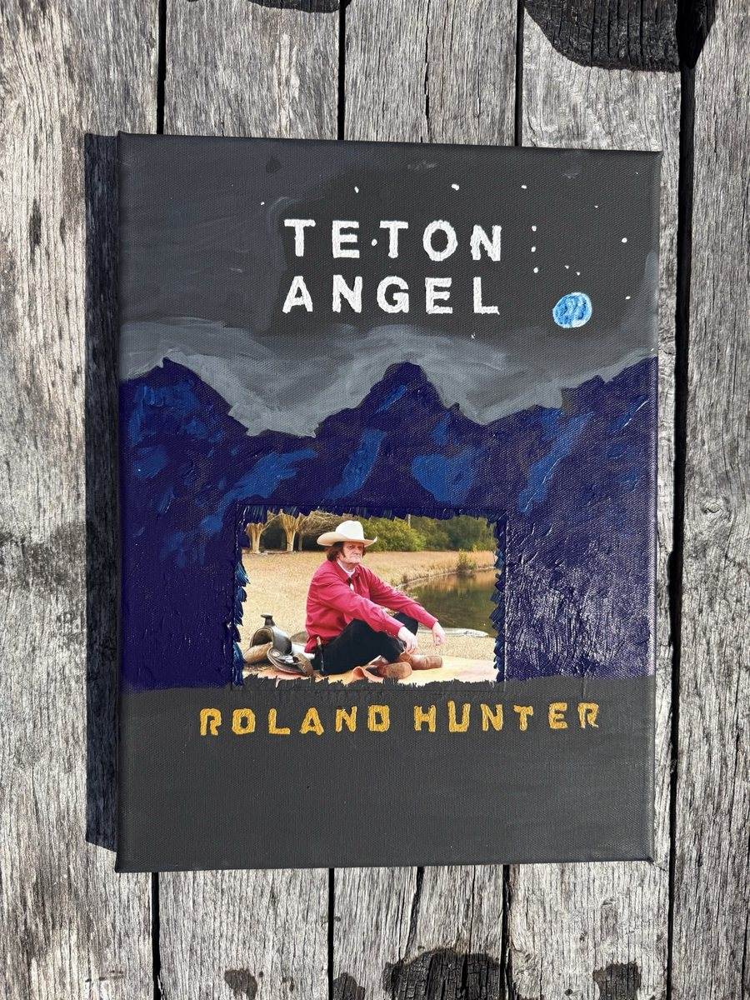
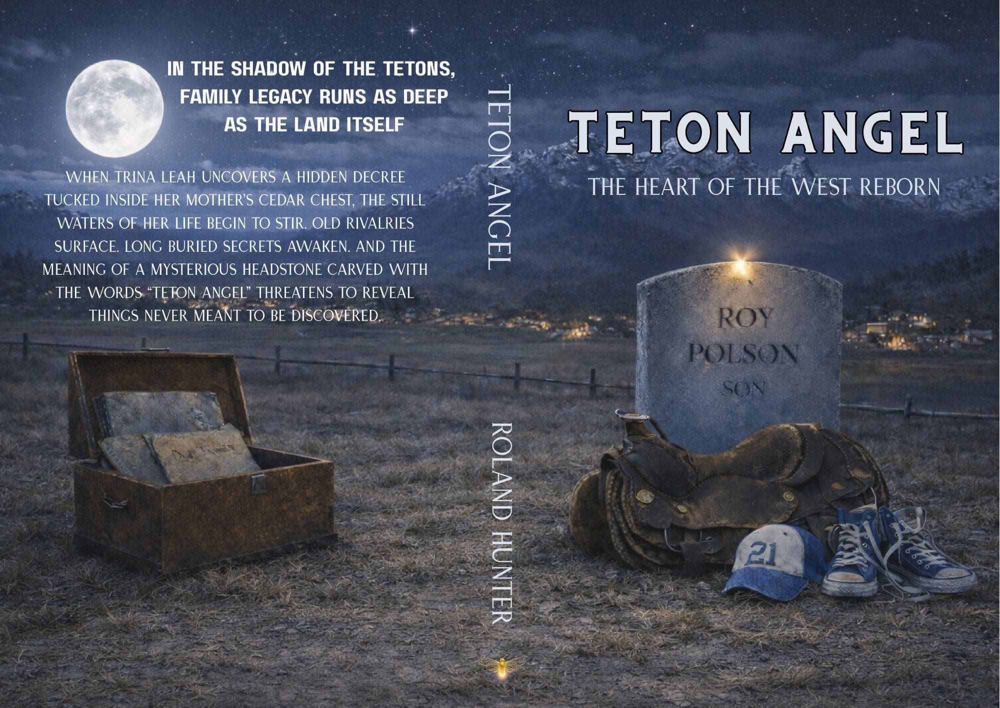
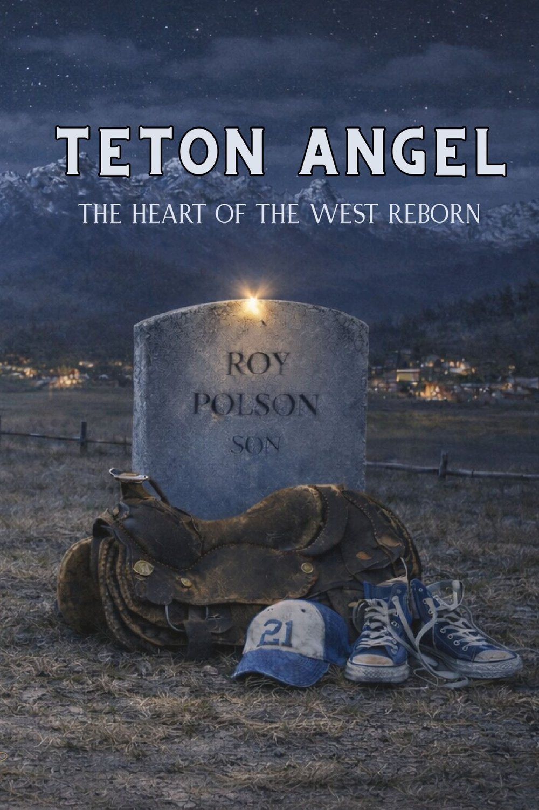

Before there was a designed cover, before the headstone and the saddle and the number 21, there was a canvas, a few jars of paint, and a writer who wanted to see his book.
Roland Hunter painted the first cover of Teton Angel himself.

A night sky over the Tetons
Look closely and you can see the whole book already in it. The title is painted in plain white capitals across a dark night sky, scattered with stars. A small blue moon hangs off to the right. Below, a band of gray cloud rolls over the Tetons, painted in heavy strokes of deep blue and violet, the peaks rough and jagged the way they look from the valley floor at dusk.
In the middle of the mountains, he cut a window. Through it is a photograph of the author himself: red western shirt, white cowboy hat, a saddle at his side, sitting on the ground by a stretch of water. And across the bottom, in gold lettering: ROLAND HUNTER.
It isn't slick. It isn't meant to be. It's a working man's cover, made by hand by someone who spent more than twenty years writing his story one paragraph at a time and wanted to hold something real at the end of it.
Everyone has a story within them. This is his.
From the canvas to the headstone
The finished cover kept the bones of that painting: the night sky, the stars, the Tetons rising in the background, the lights of a small town in the valley. What changed was the center. Where Roland's painting held a portrait of the author, the final cover holds the mystery at the heart of the book: a headstone.

What the symbols mean
Nothing on the final cover is decoration. Every object comes straight out of the book, from the description of the monument that stands at the foot of Roy Polson's grave.
The headstone
It reads simply: Roy Polson, Son. Two words that carry a lot more weight once you've read the book.
The saddle
A carved stone saddle sits at the foot of the grave. Roy was a rodeo kid and a trail rider, and in a story about ranch families, a saddle stands for a whole way of life.
The number 21
Tied to the saddle is a ball cap with the number twenty-one, the same navy cap Roy wears in the story.
The high-top sneakers
The saddle rests on a pair of high-top tennis shoes, carved unlaced. Readers will find out why that detail matters.
The light on the stone
A single small light glows at the top of the headstone, like a star come down to rest. We'll leave its meaning to you.
The cedar chest
On the back cover, under a full moon, sits an open chest stuffed with old papers. That's where Trina Leah finds the hidden decree that starts everything.
And at the base of the monument, carved in stone, are the two words that give the book its title, words that "even those who know and love Roy Polson best" can't fully explain: Teton Angel.
Why the painting still matters
The final cover is the one on the shelf. But the painted one is the one that shows where this book came from: not a publishing house, but a ranch kid turned cattleman turned trucker turned novelist, sitting down with a brush and painting the mountains he grew up under because he wanted to see his story with his own eyes.
If you've read the book, look at both covers again. You'll see the same sky.

See what the stone means
Teton Angel is available in paperback, hardcover and Kindle.
Get the book →